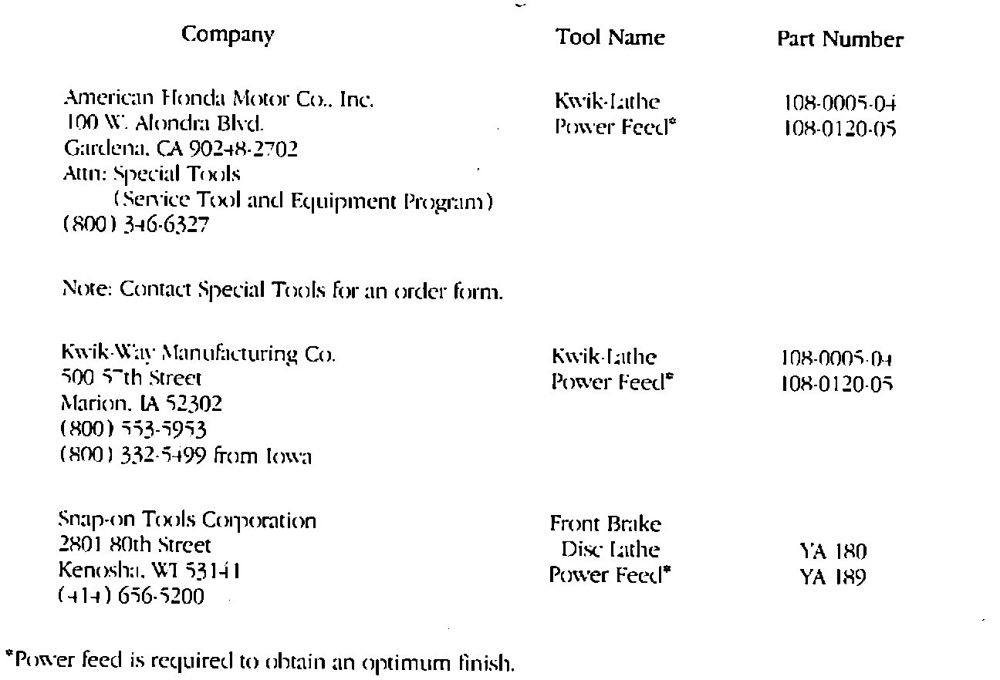

Front Brake Disc Refinishing Equipment
November 30, 1987BULLETIN NO.: 87-035
YEAR 1986
MODEL ALL
VIN APPLICATION ALL
Front Brake Disc Refinishing Equipment (Supersedes 86-009, dated September 29, 1986)

The front brake disc refinishing equipment listed is required to service Acura automobiles (see Section 3.9 of your Automobile Dealer Sales and Service Agreement). This equipment may be purchased through American Honda's Service Tool and Equipment Program or from the companies listed.
NOTE:
Equipment costs vary from vendor to vendor.
Ordering Information
RETURN INFORMATION
To return new equipment purchased from American Honda or Kwik-Way Manufacturing Co., be sure to follow Kwik-Way's "Returned Goods Procedure".
To return new equipment purchased from Snap-on Tools Corporation, contact your local Snap-on dealer.
KWIK-WAY RETURNED GOODS PROCEDURE
No returned goods will be accepted at Kwik-Way Manufacturing Co. without prior written approval.
CONDITIONS
1. Only defective equipment and/or parts not repairable in the field still under warranty may be returned.
2. Only stock adjustments for new, unused parts will be allowed.
3. Equipment cannot be returned for stock adjustment.
PROCEDURE
1. Telephone Allen Taylor, Kwik-Way Manufacturing Co. at (319) 377-9421.
2. Return equipment or parts freight prepaid with returned goods authorization documents to:
Kwik-Way Manufacturing Co.
755 26th Street
Marion, IA 52302
NOTE:
Include the returned goods authorization number (RGA #) on the mailing label.
3. Include a copy of the original sales invoice with your shipment to allow for timely credit.